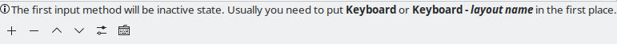
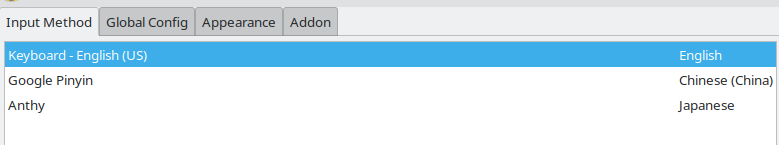

How to install the manjaro linux
Contents:
** Installation
1. Preparation
2. Burning a bootable drive
3. Installation
** Configuration
1. Updating the mirrors and packages
2. Installing the input method
3. Removing the default zsh configuration
4. Personalizing KWin Shortcuts
5. The follow-up
** Installation
1. Preparation
Prepare an 8GB USB flash drive, remove the partitions on it and format it. Taking the Linux operating system as an example, insert the USB flash drive and use fdisk to check partitions and remove all partitions on it:
sudo fdisk -l #list partitions
sudo fdisk /dev/sdb #remove partitionsNote: When removing partitions, the last partition sdb1 should also be removed, otherwise this partition can not be addressable.
After removing the old partitions, use mkfs to format the USB flash drive:
sudo mkfs.ext4 /dev/sdb #ext4 filesystemSo far, The preparation is ready.
2. Burning a bootable drive
Download the latest image file from the manjaro linux official website. The Plasma in OFFICIAL EDITIONS is recommended.
Next, burn the manjaro linux bootable drive. Taking the linux operating system as an example, find the manjaro linux image file and use dd to burn it:
sudo dd if=manjaro-kde-21.3.3-220712-linux515.iso of=/dev/sdb bs=4M #the image file in the code is just an exampleThe manjaro linux bootable drive is burned completely.
3. Installation
Insert the bootable drive, restart the computer, enter the BOOT MANAGER or BIOS and choose to boot the system with USB Drive from the EFI list to activate the bootable drive.
Click the icon, Installation, on the desktop and follow the guidance to go forward until the process of partitioning and mounting.
At this time, you can choose the default option to let the system complete the partitioning work automatically, but if you wanna better manage the storage space, you can also partition manually as follow:
| Sequence | Size | File System | Mount Point | Flag |
| 1st | 300MiB | FAT32 | /boot/efi | boot |
| 2nd | 102400MiB | ext4 | / | |
| 3rd | 8192MiB | linuxswap | swap | |
| 4th | 122880MiB | ext4 | /home | |
Note: The Size of the 1st and 3rd is the same as above, but the Size of the 2nd and 4th can be adjusted at will.
It is recommended to keep about 10GB of free storage space, and then follow the guidance to continue the follow-up. After the installation, shut down, unplug the bootable drive and restart the machine. The installation of the manjaro linux is complete.
** Configuration
1. Updating the mirrors and packages
The mirror servers are distributed all over the world. To ensure the fastest speed, use pacman-mirrors to rank the servers and find the nearest.
sudo pacman-mirrors -i -c China -m rankAfterwards, use pacman to update all the packages:
sudo pacman -SyyuAt this point, the updates of mirrors and packages are both complete.
2. Installing the input method
Install fcitx by pacman:
sudo pacman -S fcitx-im
sudo pacman -S fcitx-configtoolSecondly, install the language packages according to your own needs:
sudo pacman -S fcitx-anthy #Japanese
sudo pacman -S fcitx-googlepinyin #Chinese Pinyin
sudo pacman -S fcitx-hangul #KoreanCreate the .xprofile in the home and write in with:
export GTK_IM_MODULE=fcitx
export QT_IM_MODULE=fcitx
export XMODIFIERS="@im=fcitx"The purpose is to enable the fcitx to start automatically and be applied to all softwares. After restarting, you can see the input method icon, and right click to configure it.
According to the warning in figure.1, the example of the configuration is shown in figure.2.

CTRL+ SPACE, the key to activate and inactivate the input method. CTRL+SHIFT, the key to switch between the input methods.
3. Removing the default zsh configuration
In the latest version of the manjaro linux, the system defaults to installing the disgusting theme and configuration of zsh in /usr/share, which is confusing. Remove it by pacman:
sudo pacman -Rns manjaro-zsh-configWhen removing manjaro-zsh-config, nerd fonts symbols related packages will be removed together, use pacman to ensure the existence of:
sudo pacman -S ttf-nerd-fonts-symbols-1000-em
sudo pacman -S ttf-nerd-fonts-symbols-1000-em-mono
sudo pacman -S ttf-nerd-fonts-symbols-2048-em
sudo pacman -S ttf-nerd-fonts-symbols-2048-em-mono
sudo pacman -S ttf-nerd-fonts-symbols-common4. Personalizing KWin Shortcuts
KWin Shortcuts configuration example:
| Behaviors | Shortcuts |
| Quick Tile Window to the Bottom / Left / Right / Top | Meta + Down / Left /Right / Up |
| Maximize / Minimize Window | Meta + PgUp / PgUpDown |
| Switch to Window Above / Below / the Left / the Right | Meta + Alt + K / J / H / L |
5. The follow-up
So far, the bare operating system with manjaro linux as the kernel and KDE/Plasma as the desktop environment has been installed.
Linux is kinda a highly customizable system. For further functional enhancement, see How to configure an overpowered manajro linux, which lists recommended applications and corresponding configurations.